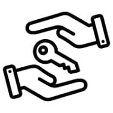
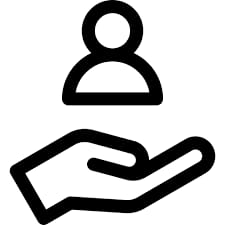
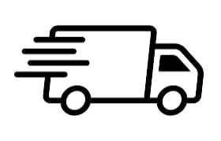

Who We Are
Green gadget recycle is one of the leading companies of India that recycle electrical and electronic (EEE) waste. Successfully operating, Green gadget recycle offers comprehensive, complete, and responsible recycling services. Our integrated and best in class technology ensures environmental safety and sustainability while recycling eWaste.With our experience in managing large volumes of high-quality EEE waste, we are able to extract all of the components of an electrical item including metals like mercury, lead, cadmium, PCBs, etc., without leaving a trace behind. We are ISO certified and comply with strict environmental regulations regarding handling hazardous products and disposing of them safely to keep our environment green.
OUR MISSION
Green gadget recycle believes in three principles: reduce, reuse and recycle. Our goal is to create awareness around the need for responsible eWaste disposal in India. While many people know about electronics recycling, we are committed to the task of creating an enabling environment for informal recyclers by providing them with training on disposal techniques and safe practices.OUR VISION
We are committed to using our expertise, resources and experience to build a sustainable future for the planet. We believe that e-waste is one of the most important issues to tackle in order to protect our environment and our way of life. We have reached a point where we have become aware of the damage caused by e-waste and are committed to making a difference.OUR VALUES
 Ownership
We believe that when you own something, you have a responsibility to take care of it.
This is why we provide our clients with an easy and convenient way to collect their e-waste at their doorstep.
 Customer first
We at Green gadget recycle strive to serve the needs of our customers, be it in regards to recycling and sustainable waste management services or social responsibility towards our local communities.
Responsible
We are passionate about recycling because we believe that this process can help reduce carbon emissions, save energy, and protect the environment from harmful chemicals such as mercury, lead and cadmium.
Education
We believe that eduction is important for sustainability.
We aim to provide information on our products and their uses to help you conserve the environment and recycle.
 Passion to deliver
Our goal is to offer services and products that are both secure and sustainable.
Every product is checked to make sure it satisfies customer requirements and follows all applicable laws.
Respect for people
We are a socially responsible company that respects its employees, partners and customers.
We believe in creating a sustainable future by focusing on the issue of eWaste management as well as promoting social responsibility amongst our stakeholders.